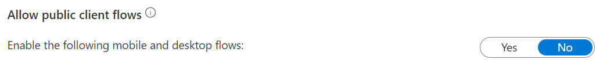

Authentication and authorization
This document describes the authentication and authorization (A&A) of deployed Azure TRE system. The backbone of A&A is Azure Active Directory (AAD). It holds the identities of all TRE/workspace users, including administrators, and connects the identities with app registrations defining the privileges per user roles.
App registrations
App registrations (represented by service principals) define the privileges enabling access to the TRE system (e.g., API) as well as the workspaces.
It is recommended to run the /scripts/aad-app-reg.sh script to create the two main app registrations: TRE API and TRE Swagger UI. This automatically sets up the app registrations with the required permissions to run Azure TRE. The script will create an app password (client secret) for the TRE API app; make sure to take note of it in the script output as it is only shown once.
Alternatively you can also choose to create the app registrations manually via the Azure Portal - see Quickstart: Register an application with the Microsoft identity platform on how. The required setup with permissions is documented below.
That is the authentication and authorization setup needed to run the Azure TRE. Below is details about the permissions and if you want to set up the end-to-end automated tests, as it requires a third app registration.
Workspaces rely on app registrations as well, and those are documented under Workspaces.
TRE API
The TRE API app registration defines the permissions, scopes and app roles for API users to authenticate and authorize API calls.
API permissions - TRE API
| API/permission name | Type | Description | Admin consent required | Status | TRE usage |
|---|---|---|---|---|---|
Microsoft Graph/Directory.Read.All (https://graph.microsoft.com/Directory.Read.All) |
Application* | Allows the app to read data in your organization's directory, such as users, groups and apps, without a signed-in user. | Yes | Granted for [directory name] | Used e.g., to retrieve app registration details, user associated app roles etc. |
Microsoft Graph/User.Read.All (https://graph.microsoft.com/User.Read.All) |
Application* | Allows the app to read user profiles without a signed in user. | Yes | Granted for [directory name] | Reading user role assignments to check that the user has permissions to execute an action e.g., to view workspaces. See /api_app/services/aad_access_service.py. |
*) See the difference between delegated and application permission types.
See Microsoft Graph permissions reference for more details.
Scopes - TRE API
api://<Application (client) ID>/Workspace.Read- Allow the app to get information about the TRE workspaces on behalf of the signed-in userapi://<Application (client) ID>/Workspace.Write- Allow the app to create, update or delete TRE workspaces on behalf of the signed-in user
App roles - TRE API
| Display name | Description | Allowed member types | Value |
|---|---|---|---|
| TRE Administrators | Provides resource administrator access to the TRE. | Users/Groups,Applications | TREAdmin |
| TRE Users | Provides access to the TRE application. | Users/Groups,Applications | TREUser |
Authentication - TRE API
The TRE API app registration requires no redirect URLs defined or anything else for that matter. From a security standpoint it should be noted that public client flows should not be allowed (see the image below taken from app registration authentication blade in Azure Portal).

TRE Swagger UI
TRE Swagger UI app registration:
- Controls the access to the Swagger UI of the TRE API
- Has no scopes or app roles defined
API permissions - TRE Swagger UI
| API/permission name | Type | Description | Admin consent required | Status |
|---|---|---|---|---|
Microsoft Graph/offline_access (https://graph.microsoft.com/offline_access) |
Delegated* | Allows the app to see and update the data you gave it access to, even when users are not currently using the app. | No | Granted for [directory name] |
Microsoft Graph/openid (https://graph.microsoft.com/openid) |
Delegated* | Allows users to sign in to the app with their work or school accounts and allows the app to see basic user profile information. | No | Granted for [directory name] |
TRE API/Workspace.Read (api://<TRE API Application (client) ID>/Workspace.Read) |
Delegated* | See TRE API app registration scopes. | No | Granted for [directory name] |
TRE API/Workspace.Write (api://<TRE API Application (client) ID>/Workspace.Write) |
Delegated* | See TRE API app registration scopes. | No | Granted for [directory name] |
*) See the difference between delegated and application permission types.
Authentication - TRE Swagger UI
Redirect URLs:
https://<app name>.<location>.cloudapp.azure.com/docs/oauth2-redirecthttp://localhost:8000/docs/oauth2-redirect- For local testing
The Swagger UI is a public client, so public client flows need to be enabled:

TRE e2e test
The TRE e2e test app registration is used to authorize end-to-end test scenarios. It has no scopes or app roles defined.
Note
- This app registration is only needed and used for testing
- As of writing this, there is no automated way provided for creating the TRE e2e test app registration, so it needs to be created manually.
API permissions - TRE e2e test
| API/permission name | Type | Description | Admin consent required |
|---|---|---|---|
Microsoft Graph/openid (https://graph.microsoft.com/openid) |
Delegated | Allows users to sign in to the app with their work or school accounts and allows the app to see basic user profile information. | No |
Microsoft Graph/User.Read (https://graph.microsoft.com/User.Read) |
Delegated | Allows users to sign-in to the app, and allows the app to read the profile of signed-in users. It also allows the app to read basic company information of signed-in users. | No |
| Delegated | Allow the app to get information about the TRE workspaces on behalf of the signed-in user | No | |
| Delegated | Allow the app to create, update or delete TRE workspaces on behalf of the signed-in user | No |
Authentication - TRE e2e test
-
Define Redirect URLs:
In the TRE e2e test app registration go to Authentication -> Add platform -> Select Mobile & Desktop and add:
https://login.microsoftonline.com/common/oauth2/nativeclient msal<TRE e2e test app registration application (client) ID>://auth
-
Allow public client flows (see the image below). This enables the end-to-end tests to use a username and password combination to authenticate.
Warning
Public client flows should never be allowed for a production environment as it poses a security risk.
End-to-end test user
The end-to-end test authentication and authorization is done via a dummy user, using its username and password, dedicated just for running the tests.
The user is linked to the application (app registration) the same way as any other users (see Enabling users).
The end-to-end test should be added to TRE Administrator role exposed by the TRE API application, and to the Owners role exposed by the Workspaces application.
Workspaces
Access to workspaces is also controlled using app registrations - one per workspace. The configuration of the app registration depends on the nature of the workspace, but this section covers the typical minimum settings.
Caution
The app registration for a workspace is not created by the API. One needs to be present (created manually) before using the API to provision a new workspace.
Authentication - Workspaces
Same as TRE API.
API permissions - Workspaces
| API/permission name | Type | Description | Admin consent required |
|---|---|---|---|
Microsoft Graph/User.Read (https://graph.microsoft.com/User.Read) |
Delegated | Allows users to sign-in to the app, and allows the app to read the profile of signed-in users. It also allows the app to read basic company information of signed-in users. | No |
App roles
| Display name | Description | Allowed member types | Value |
|---|---|---|---|
| Owners | Provides ownership access to workspace. | Users/Groups | WorkspaceOwner |
| Researchers | Provides access to workspace. | Users/Groups | WorkspaceResearcher |
Enabling users
For a user to gain access to the system, they have to:
- Have an identity in Azure AD
- Be linked with an app registration and assigned a role
When these requirements are met, the user can sign-in using their credentials and use their privileges to use the API, login to workspace environment etc. based on their specific roles.

The users can also be linked via the Enterprise application view: